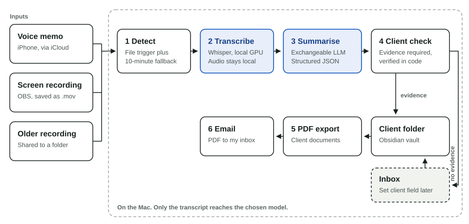

Meeting minutes pipeline
A background pipeline on my Mac that turns voice memos and screen recordings into structured meeting minutes, files them by client and sends them to me as PDF.
- Role
- Design and build
- Timeline
- October 2026
- Status
- In production use
- Stack
- Python, Whisper (MLX), exchangeable LLM, Obsidian, launchd
- Problem
- Writing minutes after client meetings takes time, and action items get lost between recordings, notes and inbox.
- Solution
- Every new recording becomes a two-page protocol with summary, key points and dated to-dos, filed in the right client folder without any manual start.
- What it shows
- I automate my own knowledge work end to end, with local AI, guardrails in code and no additional running cost.

The problem
After a client meeting, the minutes compete with the next meeting. Recordings pile up on the phone, and action items with owners and due dates often live only in someone's memory. Writing a clean protocol by hand is exactly the kind of routine work that gets postponed.
What I built
I record a meeting with the iPhone voice memo app or capture a call with OBS on the Mac. A background service picks up every new recording, transcribes it locally and passes the transcript to a language model with a fixed prompt. Older recordings can be added on demand by sharing them to a folder in iCloud Drive.
Each protocol follows the same structure: key facts (date, participants, client), a short executive summary, one to five key points and a table of next steps with owner and due date. Relative dates such as "next Friday" are converted using the recording date. Figures from the conversation, such as quantities, percentages, costs and time spans, are carried over exactly into the key points, so every argument keeps its numbers. Anything the conversation does not state is marked as open, so the model never fills gaps with guesses.
The protocol lands in my Obsidian vault. Once it sits in a client folder, the pipeline renders a formatted PDF into that client's documents and emails it to me.
Key decisions
-
Transcription stays on the device
Whisper runs on the Apple Silicon GPU through MLX. Audio is never sent to an AI service, and transcription costs nothing. The default model is large-v3; one setting switches to large-v3-turbo. On an M2 with 16 GB, five minutes of audio take 146 seconds with large-v3 and 47 seconds with turbo. For a 53-minute meeting that is about 26 or 8 minutes.
-
Hallucinations are caught in code
Whisper tends to invent phrases such as "Thank you" or "Vielen Dank" in silent passages. Before transcription, the pipeline cuts long silence at the start and end and corrects the timestamps. Afterwards it removes segments that span more than 15 seconds with three words or fewer, drops known filler phrases after long pauses and collapses repeated identical segments. On the same recording, turbo matched 96 percent of the words of large-v3.
-
An exchangeable language model
The summary step is encapsulated and only receives the transcript text. The model is chosen by confidentiality: a local open-weight model keeps every word on the device, a cloud model is used only through business access with training excluded by contract. Detection, filing and export stay the same either way.
-
A client needs evidence
The first version assigned known clients too eagerly: the mere presence of a client name in the prompt was enough for the model to guess. Now every assignment records its basis. Either the company is named in the conversation or file name, or the conversation points to an existing client beyond doubt (contacts, projects, systems). In both cases the model returns a verbatim quote, and the code checks that it appears in the source. A recording title from the voice memo app that matches a known client is the third and weakest basis, used only when the content fits. Titles never create new client folders. In case of doubt the protocol goes to an inbox.
-
Correction in one field
Unassigned or misassigned protocols are fixed by typing the client name into a property in Obsidian, also on the phone. On the next run the pipeline moves the file, removes the PDF from the wrong client folder and exports again.
-
No new services
macOS launchd runs the pipeline, Mail.app sends the PDF through my existing account, and iCloud moves recordings from phone to Mac. A file trigger reacts within seconds; a 10-minute interval catches delayed iCloud downloads. State tracking, a lock and three retries keep runs idempotent.
Privacy and consent
I only record conversations when all participants agree. In Germany, recording non-public speech without consent is a criminal offence (§ 201 StGB), and the GDPR applies to the transcript.
Where it stands
- In production use in several client projects since October 2026, several times a day, for voice memos and screen recordings.
- No additional running cost: local transcription, existing licences, existing mail account.
- Limits: it only runs while the Mac is awake, and it does not separate speakers; participants come from names mentioned in the conversation. Mixed-language conversations are transcribed in the main language.
Next: move the pipeline to a small Linux home server so it runs around the clock.
What I learned
Context in a prompt is also an invitation. A list of known clients, meant to help with spelling, made the model guess. Asking for a quote and checking it in code turned a judgement the model kept getting wrong into a rule it cannot break.
Hallucinations also depend on configuration. The repeated "Thank you" loops traced back largely to the transcription settings: language detection from the first 30 seconds and conditioning on previous text.